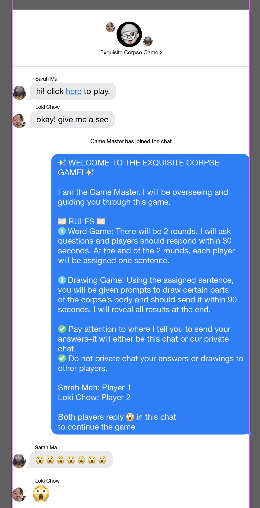
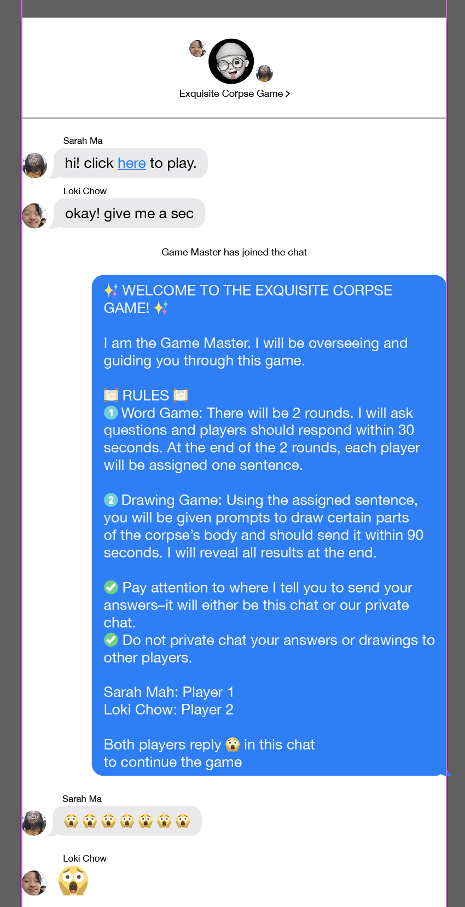
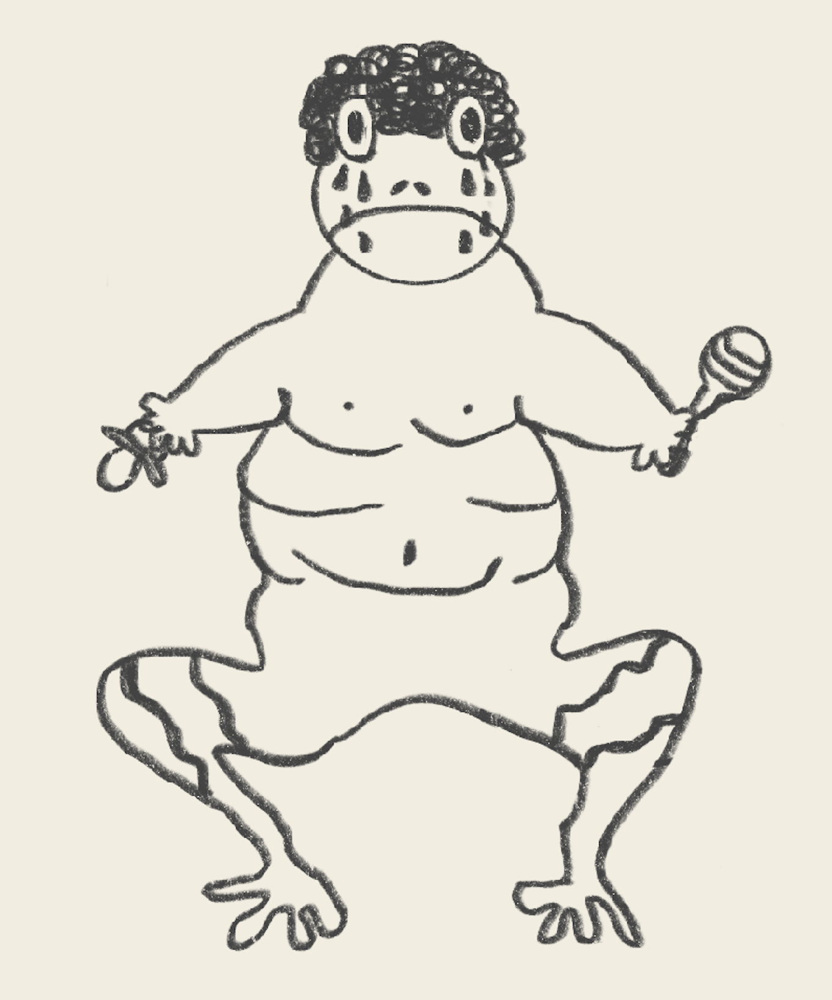
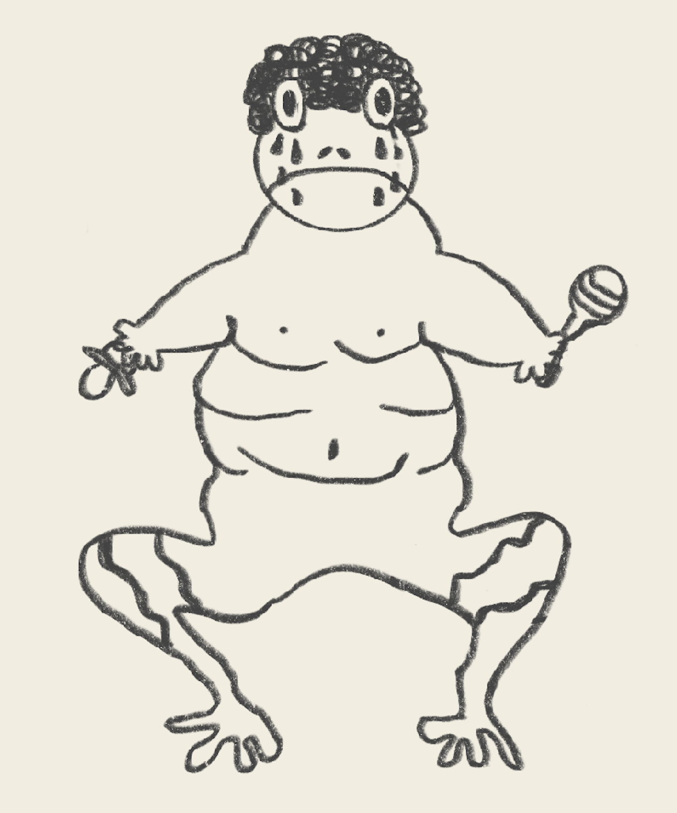

🐸Froggie's Showcase🐸
⭐ THE ORIGIN OF FROGGIE
Froggie is a representation of my online conversations and messages between friends and family. When I have a conversation with someone, I think about it as myself and the other person building upon what the person says. To me, that’s what keeps the conversation going and interesting. I’ve visualized this concept of things building upon one another through the game “exquisite corpse”. The exquisite corpse game is a collection of words or images that are collectively assembled to create a final piece. The exquisite corpse can only be done through a unified effort made by two people, much like a fruitful two-sided conversation. Also, I’ve created so many inside jokes with my friends and family online that if someone saw the texts it wouldn't make sense to them, which is reflective of how strange and unique each exquisite corpse is.
⭐ THE PROCESS OF CREATING FROGGIE
- Curated a set of rules for the word and drawing exquisite corpse game
- Created a mood board and style guide
- Sketched out a storyboard prototype
- Assigned roles for the game (player 1, player 2, game master)
- Emulated a text messaging style and inputted the rules into it
- Created a conversation between the players and game master
- Generated the words for the word game
- Drew each body part for the drawing game
- Combined the generated words and drawings into the text messages
- Coded the project by having one text message pop up at each time on the screen while the user can navigate forwards and backwards by clicking arrows
⭐ REFLECTIONS ON FROGGIE
What was gratifying about this project was seeing everything come together at the end. When I finished coding the images in order and was able to click through the text messages and tell a story of this exquisite corpse game, it was rewarding to see my vision come to fruition. Something that was difficult was keeping track of the order of rules and text messages because there were so many of them. However, I managed this by being very organized and kept track of what I’ve done and what else needed to be done. Something else that was difficult was thinking of a way to translate a traditionally paper game into a digital text messaging game. This is because a big part of the game is that the words/drawings need to stay concealed from other plays in order to not spoil the game and allow for a big reveal at the end. However, I fixed this by adding a game master as one of the players so that they are able to facilitate the exchange of information without spoiling it for the other players and I think that this solution made the digital version of this game successful. Something I would refine would be to split up some of the rules into shorter messages instead of one long one. The long ones can be boring to read (which is why I tried incorporating emojis), but I think if I just split up the rules into shorter and smaller messages it would keep the user’s attention for longer. From this project, I learned that it is possible to translate traditionally paper-based games/messages into the digital world.
 

 
